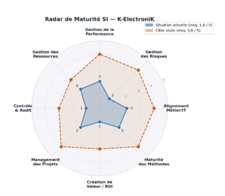
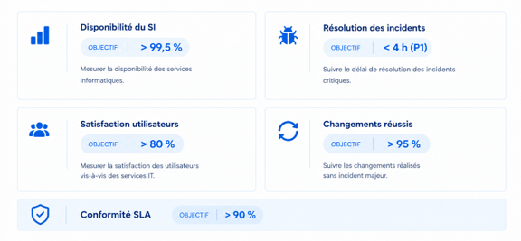
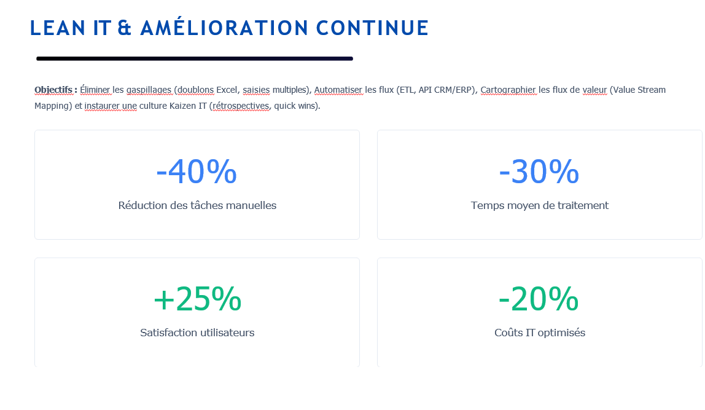
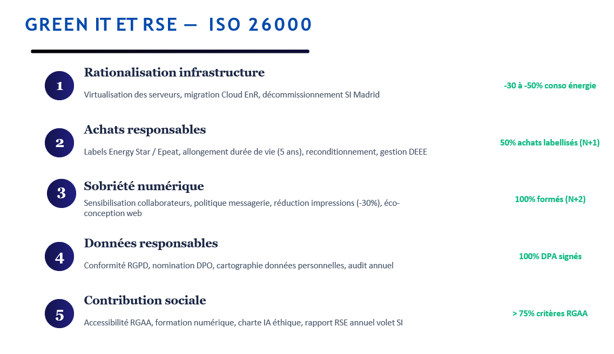

Accompagnement stratégique d’une entreprise (K-ElectroniK) dans la structuration, la gouvernance et la transformation de son système d’information. Approche orientée performance (ITIL), cybersécurité (EBIOS), durabilité (Green IT) et création de valeur métier.
Cette mission de conseil IT s’inscrit dans un contexte de transformation digitale suite au rachat d'une filiale à Madrid par l'entreprise K-ElectroniK. Le système d’information, historiquement construit par empilement d’outils métiers sur mesure (dette technique), présentait des limites majeures. L’objectif principal était d’accompagner la direction dans la structuration d’un SI cohérent, sécurisé et évolutif.

Une cartographie complète du système d’information a été réalisée selon une approche en quatre niveaux (métier, fonctionnel, applicatif et infrastructure). En parallèle, un processus clé de gestion des campagnes marketing a été modélisé en notation BPMN afin de créer un langage commun entre métiers et IT.


Une analyse de maturité de la gouvernance IT a été menée selon plusieurs axes (alignement métier/IT, gestion des risques, création de valeur). Cette évaluation a servi de base à l’élaboration d’une matrice de responsabilités (RACI).


Une analyse de risques a été conduite afin d’identifier les informations sensibles, les zones critiques et les chemins d’attaque potentiels du système d’information. Cette démarche a permis de structurer une Politique de Sécurité (PSSI) alignée avec les standards ISO 27001.

Une démarche d’amélioration continue a été définie en s’appuyant sur les bonnes pratiques ITIL v4 et les principes du Lean IT. L’objectif était de piloter la performance du SI à l’aide d’indicateurs mesurables (KPI) et d'engagements de services (SLA).


Une réflexion a été menée autour de l’impact environnemental du système d’information. Des actions concrètes ont été proposées afin de réduire l’empreinte numérique tout en améliorant l’efficience des ressources IT.

Cette mission a permis de structurer une vision claire et partagée du système d’information, en renforçant l’alignement entre la stratégie de l’entreprise et ses choix technologiques. La direction dispose désormais d’une feuille de route IT priorisée basée sur ITIL, ISO 27001 et COBIT.
Cette mission m’a permis de développer une approche globale du conseil IT, en allant au-delà de la technique pour intégrer les dimensions stratégiques, organisationnelles et humaines. J’ai renforcé mes compétences en gouvernance IT, en modélisation des processus (BPMN), en analyse de risques (EBIOS) et en pilotage de la performance, tout en consolidant ma capacité à dialoguer avec des directions métiers.
Ce projet démontre ma capacité à comprendre les enjeux métiers et à structurer stratégiquement un Système d'Information.